The Gaussian Integral: A Beautiful Application of Double Integrals and Polar Coordinates
On this page
One of the most famous integrals in mathematics is the Gaussian integral:
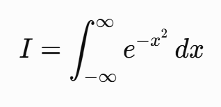
Although it looks relatively simple, this integral can’t be evaluated using elementary integration techniques we learn in middle/high school. Surprisingly, after learning Calculus III I found that we can solve it by extending the problem into two dimensions and using polar coordinates.
1. A quick introduction to double integrals
A single integral adds up quantities along a one-dimensional interval. A double integral extends this idea to a two-dimensional region.
For example, consider a surface described by the function z = f (x , y). The double integral of this function over a region D represents the volume beneath the surface and above that region.
We write this as:
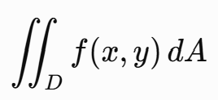
Here, dA represents a tiny element of area. In Cartesian coordinates, we can write:
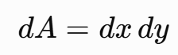
One advantage of double integrals is that we can change our coordinate system to simplify the calculation. For circular regions, polar coordinates are particularly useful.
2. Changing coordinates: The Jacobian determinant
In Cartesian coordinates, a point is described by its horizontal and vertical coordinates, x and y.
In polar coordinates, we instead describe the point using its distance from the origin, r, and its angle, θ.
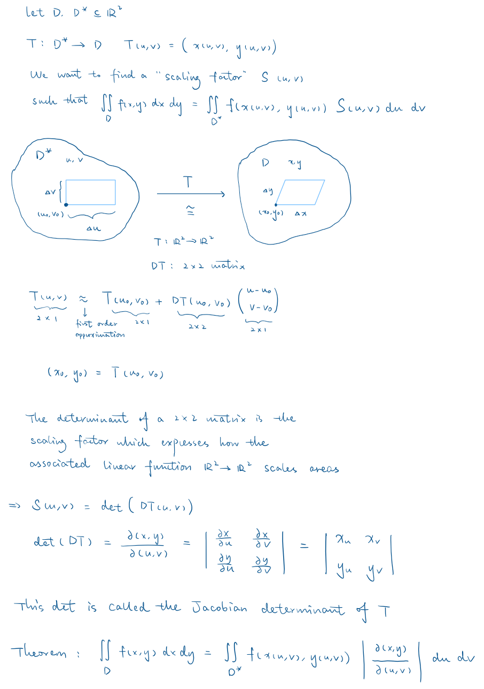
The transformation is:
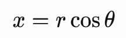
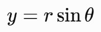
But changing coordinates also changes how we measure area. In particular, the area element is no longer simply dr dθ.
To understand why, we use the Jacobian determinant.
The Jacobian matrix is formed by taking the partial derivatives of x and y with respect to r and θ:
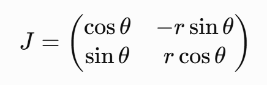
Its determinant is:
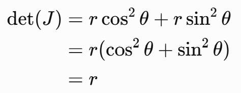
Therefore, the area element becomes:
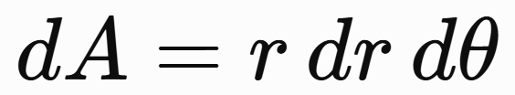
The factor r accounts for the stretching of area when we transform from Cartesian coordinates to polar coordinates.
3. Evaluate a double integral over a disk
Now, consider a disk centered at the origin with radius a. We want to evaluate:
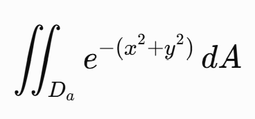
Using polar coordinates, we know that:
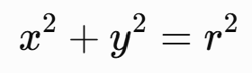
and
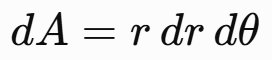
Since we are integrating over a complete disk, our bounds are:
- r goes from 0 to a
- θ goes from 0 to 2π
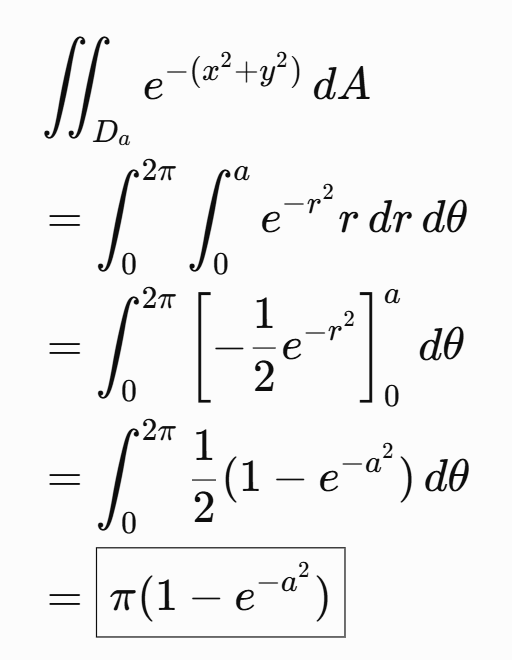
4. Let the radius approach infinity
As a approaches infinity, our disk expands to cover the entire plane.
Since e^(-a^2) approaches zero, we obtain:
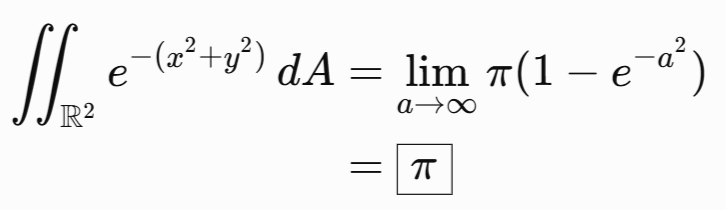
We have now evaluated the double integral over the entire plane!
5. Connect it back to the original integral
Remember that our original goal was to evaluate:
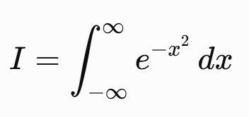
The trick is to square this integral:
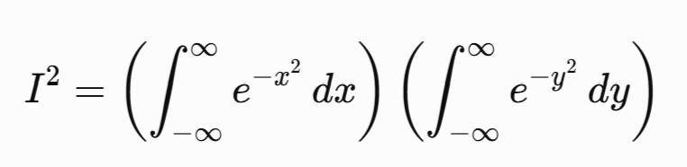
We introduce a second variable, y, because we are now working with a double integral.
Combining the two integrals gives:
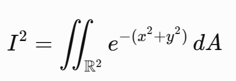
But from our calculation using polar coordinates, we already know that this double integral equals π.
Therefore:
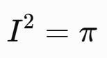
Taking the positive square root, since the integrand is always positive:
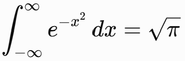
6. Summary
The original one-dimensional integral is difficult to evaluate directly. However, by squaring it, transforming it into a double integral, and switching to polar coordinates, we can take advantage of the radial symmetry of the function.
This problem demonstrates three important mathematical ideas:
(1) Double integrals: Extending integration from one dimension to two.
(2) The Jacobian determinant: Accounting for changes in area when transforming coordinates.
(3) Polar coordinates: Exploiting symmetry to simplify complicated integrals.
Sometimes, the key to solving a difficult mathematical problem is not finding a more complicated technique, but looking at it from a different dimension.
7. Extension
In A-level Further Statistics, I encountered the probability density function (PDF) for normal distribution:
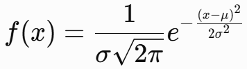
In probability, a PDF must satisfy one fundamental condition:
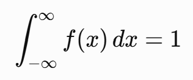
Back then, I couldn't verify if the total area under the probability density curve for normal distribution equals 1. Now, after knowing about double integration, I'm able to integrate that PDF. How exciting this is!
There are more ways to compute the Gaussian integral, such as using gamma function, fourier transformation, complex analysis, and Feynman's trick. I'm absolutely thrilled to explore and share more about these methods in the future.